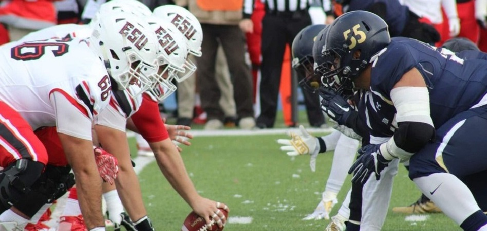

El mundo de los deportes
Un deporte de equipo se refiere al tipo de deporte
en donde la prueba se realiza entre dos equipos rivales,
cada uno compuesto por la misma cantidad de jugadores, y que tienen como
fin interactuar directamente y de manera simultánea para lograr un objetivo.
menu

El fútbol americano es un deporte de contacto en el que dos equipos de jugadores intentan llevar el balón a la zona de anotación
o patearla entre los postes. El equipo atacante tiene cuatro intentos (downs) para avanzar 10 yardas (9 metros); una vez que lo
logra tiene cuatro intentos más para avanzar otras diez yardas. Cada intento permite un pase hacia adelante, y finaliza cuando
el equipo rival derriba al portador de la pelota o una pelota cae al suelo.
El baloncesto, básquet o básqueball es un deporte que se juega en equipo sobre
distintas superficies, cubiertas o no, y consta de anotar la mayor cantidad de
“canastas” o tantos posibles en el tiempo que dura el partido. Cada equipo está
formado por cinco jugadores que atacan para anotar tantos y defienden cuando la
posesión del balón es del equipo contrario.
En el baloncesto, los tantos o “canastas” se realizan cuando se introduce el balón
(lanzado por los jugadores) en un aro de metal que cuelga a 3,05 metros que tiene
una red abierta para que la pelota caiga luego de encestarse. Los tantos suman diferente
cantidad de puntos según la zona de la cancha desde la que se ejecuta el lanzamiento.
La natación es la habilidad que permite al ser humano desplazarse en el agua,
gracias a la acción propulsora realizada por los movimientos rítmicos, repetitivos y
coordinados de los miembros superiores, inferiores y el cuerpo, y que le permitirá
mantenerse en la superficie y vencer la resistencia que ofrece el agua para
desplazarse en ella.
Se juega mediante una pelota que se debe desplazar a través del campo con cualquier
parte del cuerpo que no sean los brazos o las manos, y mayoritariamente con los pies
(de ahí su nombre). El objetivo es introducirla dentro de la portería o arco contrario,
acción que se denomina marcar un gol.